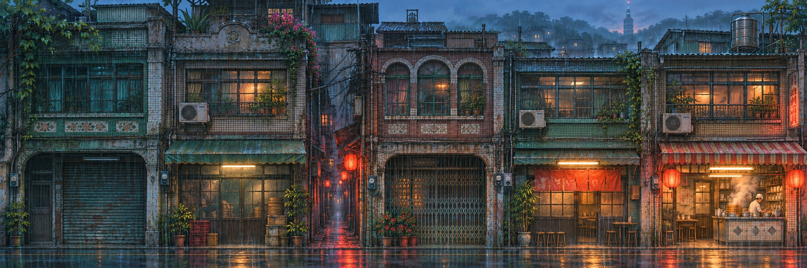
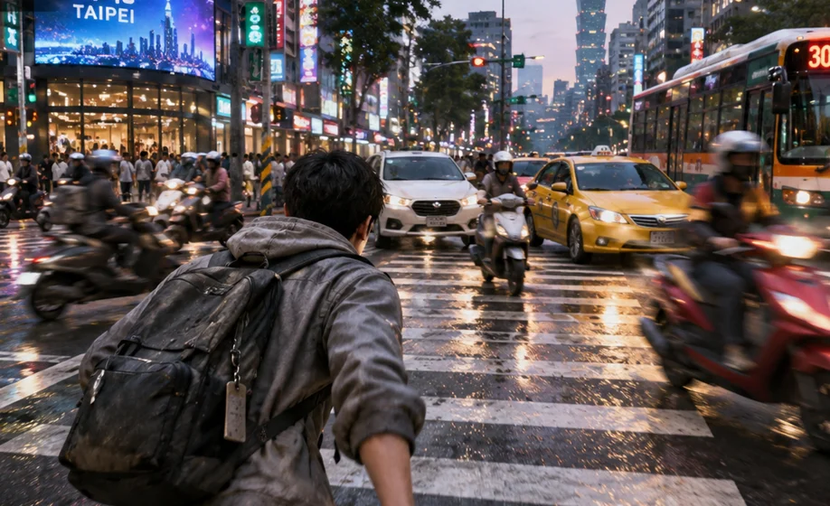

<!doctype html><html lang="en"><meta charset="utf-8"><meta name="viewport" content="width=device-width,initial-scale=1"><title>Pedestrian Living Hell · 行人地獄</title>
<style>
*{box-sizing:border-box}body{background:#101b20;color:#f5eee2;margin:0;font:16px system-ui,sans-serif}main{max-width:1170px;margin:auto;padding:clamp(24px,6vw,82px) 5vw}header{display:flex;align-items:center;justify-content:space-between;border-bottom:1px solid #586464;padding-bottom:14px}header span,small{font:600 13px ui-monospace,monospace;letter-spacing:.09em;color:#ffc78c}button{background:transparent;color:inherit;border:1px solid #889390;border-radius:4px;padding:10px;cursor:pointer}h1{font:500 clamp(46px,7vw,90px)/1.05 Georgia,serif;letter-spacing:-.045em;margin:.55em 0}.cards{display:grid;grid-template-columns:1fr 1fr;gap:20px}a{color:inherit;text-decoration:none;display:block;border-top:3px solid #e8ad71;background:#192930;padding:0 0 22px}a:hover,a:focus-visible{outline:2px solid #ffc78c;outline-offset:3px}img{width:100%;aspect-ratio:1.85;object-fit:cover;display:block;margin-bottom:20px}small,h2,p{margin:10px 20px}h2{font:500 clamp(26px,3vw,40px) Georgia,serif}p{color:#c2ceca;line-height:1.5}@media(max-width:640px){.cards{grid-template-columns:1fr}main{padding:24px 5vw}}
</style><main><header><span>台北 TAIPEI</span><button id="lang"></button></header><h1></h1><div class="cards"><a href="classic.html"><small></small><h2></h2><p></p></a><a href="crossing/index.html"><small></small><h2></h2><p></p></a></div></main><script>
let zh=navigator.language.toLowerCase().startsWith('zh');try{zh=(localStorage.getItem('plh2-lang')|| (zh?'zh':'en'))==='zh'}catch{}
function render(){document.documentElement.lang=zh?'zh-Hant':'en';document.querySelector('h1').textContent=zh?'行人地獄':'Pedestrian Living Hell';lang.textContent=zh?'English':'繁體中文';let names=zh?['早餐之路','忠孝路口']:['The Breakfast Run','Zhongxiao Crossing'];let descriptions=zh?['橫向捲軸穿越三個街區，走完早餐路線。','從行人肩後觀察雨後的路口，平安抵達對街。']:['Cross three city blocks on the original side-scrolling breakfast run.','Watch traffic over your shoulder and reach the far sidewalk after the rain.'];document.querySelectorAll('.cards a').forEach((a,i)=>{a.querySelector('small').textContent=(zh?'模組 ':'MODULE ')+(i+1);a.querySelector('h2').textContent=names[i];a.querySelector('p').textContent=descriptions[i]})}lang.onclick=()=>{zh=!zh;try{localStorage.setItem('plh2-lang',zh?'zh':'en')}catch{}render()};render();
</script></html>
